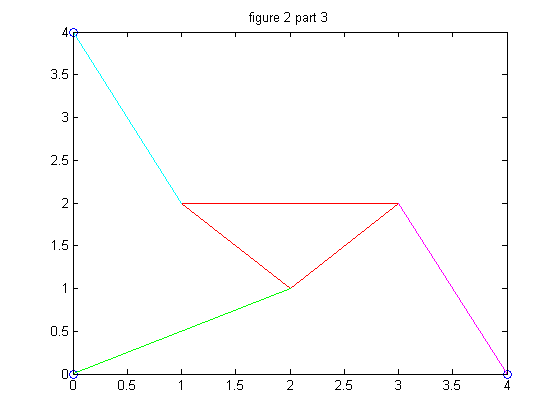

Part II: Graph of \(f(\theta)\)
Our Matlab code creates the function described in the introduction for a given set of parameters.
We began by plotting \(f(\theta)\) for a given set of sample values of parameters in order to test our function
\(L_1,L_2, L_3, p_1, p_2,p_3, \gamma\), with a set of anchoring points
\(\{(0,0), (4,0),(0,4)\}\).
The parameter test values were as follows:
\(L_1 = 2\)
\(L_2 = L_3 = \sqrt2\)
\(p_1 = p_2 = p_3 = \sqrt2\)
\(\gamma = \frac{\pi}{2}\)
This function's zeros for the given parameters are truly at \(\frac{\pi}{4}\) and \(\frac{-\pi}{4}\). Upon calculating \(f(\theta)\) for these values we obtain the same backward error of \(-2.273 * 10^{-13}\). This is small enough a value to accept these values as the true zeros.
Part III
The graph in the previous section had two zeroes, each of which corresponds to a pose in the two-dimensional Stewart Platform. The pose corresponding to the root \(\theta = \frac{\pi}{4}\) returned, as expected, a coordinate of \((x,y) = (2,1)\) while \(\theta = -\frac{\pi}{4}\) returned \((x,y) = (1,2)\). The plots of each orientations were obtained by manually plotting the vectors in Matlab after solving for \(\theta\) These plots are shown below:

Part IV
We now construct poses for the Stewart Platform specified by \(x_1 = 5\), \((x_2,y_2) = (0,6)\), \(L_1 = L_3 = 3\), \(L_2 = 3\sqrt{2}\), \(\gamma = \frac{\pi}{4}\), \(p_1 = p_2 =5\), and \(p = 3\).
| \(\theta\) | \(X\) | \(Y\) | Plot | 2.1159 | 4.5718 | 2.0244 |
|---|---|---|---|
| -0.7208 | -1.3784 | 4.8063 | |
| -0.3310 | -0.9147 | 4.9156 | |
| 1.1437 | 4.4818 | 2.2167 |
Part V
We repeat the process in part 4 but we must change the second strut length, p2, so that we wind up with 6 poses instead of 4. We chose p2 = 7.005 for our new strut length, and then followed through with the problem as before.
| Theta | X | Y | Plot | |
|---|---|---|---|---|
| -0.6587 | -4.3488 | 2.4673 | ||
| -0.3813 | -4.7809 | 1.4637 | ||
| 0.0481 | -4.9488 | 0.7134 | ||
| 0.4603 | -0.8223 | 4.9319 | ||
| 0.9775 | 2.2955 | 4.4419 | ||
| 2.5144 | 3.2114 | 3.8324 |
Part VI
Once more we repeat the process in part 4 and part 5 but this time we look for parameters that gives us only 2 roots and 2 poses. To accomplsih this we used P2 = 9 for our flexible strut and that produced two poses.
| Theta | X | Y | Plot |
|---|---|---|---|
| 1.5479 | 0.7100 | 4.9493 | |
| 2.2989 | 1.3916 | 4.8024 |